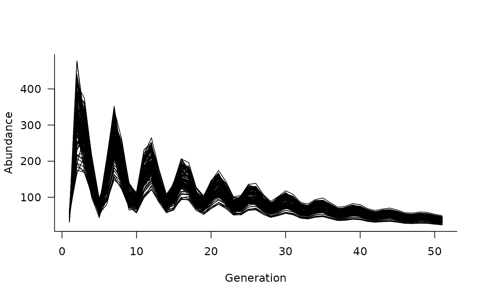

Specify environmental and demographic stochasticity in models of population dynamics
Source:R/stochasticity.R
stochasticity.RdSpecify environmental stochasticity (random variation in vital rates) and demographic stochasticity (random variation in population outcomes).
Arguments
- masks
a logical matrix or vector (or list of these) defining cells affected by
funs. See Details andmasks- funs
a function or list of functions with one element for each element of
masks. See Details
Details
Masks must be of the same dimension as the population
dynamics matrix (in the case of environmental stochasticity)
or have one element for each class (in the case of demographic
stochasticity). Masks specify cells influenced by stochasticity
according to funs. Additional details on masks are provided
in masks.
Functions must have at least one argument, a population dynamics matrix for environmental stochasticity or a vector of population abundances for demographic stochasticity. Functions must return an output of the same dimensions as the input, modified to reflect the effects of stochasticity on vital rates or population abundances.
Additional arguments to functions are supported and can be
passed to simulate with the args,
args.dyn, or args.fn arguments.
Examples
# define a population matrix (columns move to rows)
nclass <- 5
popmat <- matrix(0, nrow = nclass, ncol = nclass)
popmat[reproduction(popmat, dims = 4:5)] <- c(10, 20)
popmat[transition(popmat)] <- c(0.25, 0.3, 0.5, 0.65)
# define a dynamics object
dyn <- dynamics(popmat)
# simulate from this without any form of stochasticity
# (50 time steps, 100 replicates)
sims <- simulate(dyn, nsim = 100, options = list(ntime = 50))
# plot the simulated trajectories
plot(sims)

# and plot
plot(sims)
if (FALSE) { # \dontrun{
# note that there is only one trajectory now because
# this simulation is deterministic.
#
# let's change that by adding some environmental stochasticity
envstoch <- environmental_stochasticity(
masks = list(
reproduction(popmat, dims = 4:5),
transition(popmat)
),
funs = list(
function(x) rpois(n = length(x), lambda = x),
function(x) rmultiunit(n = 1, mean = x, sd = 0.1 * x)
)
)
# update the dynamics object and simulate from it
dyn <- update(dyn, envstoch)
sims <- simulate(
dyn,
init = c(50, 20, 10, 10, 5),
nsim = 100,
options = list(ntime = 50),
)
# the rmultiunit draws can be slow but we can speed
# this up by calculating them once per generation
# instead of once per replicate within each generation
envstoch <- environmental_stochasticity(
masks = list(
reproduction(popmat, dims = 4:5),
transition(popmat)
),
funs = list(
function(x, ...) rpois(n = length(x), lambda = x),
function(x, mean, sd) {
pnorm(mean + sd * rnorm(length(x)))
}
)
)
# this requires an argument "function" that takes the
# current state of the population model in each
# iteration and calculates the correct arguments to
# pass to environmental_stochasticty
envstoch_function <- function(obj, pop, iter) {
mat <- obj$matrix
if (is.list(mat)) {
mat <- mat[[iter]]
}
out <- aae.pop:::unit_to_real(
mat[transition(mat)], 0.1 * mat[transition(mat)]
)
list(mean = out[, 1], sd = out[, 2])
}
# update the dynamics object and simulate from it
dyn <- update(dyn, envstoch)
sims <- simulate(
dyn,
init = c(50, 20, 10, 10, 5),
nsim = 100,
args = list(environmental_stochasticity = list(envstoch_function)),
options = list(ntime = 50),
)
# a simple way to add demographic stochasticity is to change
# the "updater" that converts the population at time t
# to its value at time t + 1. The default in aae.pop
# uses matrix multiplication of the vital rates matrix
# and current population. A simple tweak is to update
# with binomial draws. Note that this also requires a
# change to the "tidy_abundances" option so that population
# abundances are always integer values.
sims <- simulate(
dyn,
init = c(50, 20, 10, 10, 5),
nsim = 100,
options = list(
update = update_binomial_leslie,
tidy_abundances = floor
),
args = list(
environmental_stochasticity = list(envstoch_function)
)
)
# and can plot these again
plot(sims)
} # }